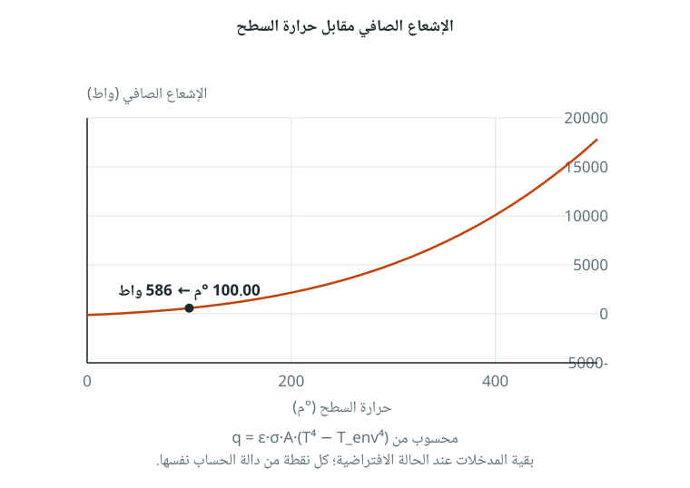

كم واطًا يشعّ سطح بحسب حرارته؟
غيّر الانبعاثية والمساحة وحرارة السطح والمحيط، وتابع الصادر والوارد والصافي.
بداية المقياس على الحالة المرجعية: الانبعاثية 0.90، المساحة 1.00 م²، حرارة السطح 100.00 °م، حرارة المحيط 25.00 °م = 586 واط. محاكاة تعليمية لا قياس فيزيائي حقيقي: الأرقام تُحسب من النموذج لحظيًا.
افتراضات النموذج والمصدر
q = ε·σ·A·(T⁴ − T_env⁴)
سطح رمادي بانبعاثية ثابتة
محيط كبير عند حرارة منتظمة
لا توصيل ولا حمل محسوبين
الحرارة المطلقة بالكلفن
الجسم الأسود مشعّ مثالي يمتص كل ما يصل إليه ويشعّ أقصى ما يمكن عند حرارته. قانون ستيفان-بولتزمان يقول إن الطاقة المشعّة لكل وحدة مساحة تتناسب مع الحرارة المطلقة مرفوعة للقوة الرابعة. القوة الرابعة تجعل الأثر حادًّا: مضاعفة الحرارة المطلقة تضاعف الإشعاع ست عشرة مرة. والسطح الحقيقي يشعّ أقل من المثالي بنسبة هي انبعاثيته.
كيف تعمل الظاهرة؟
الإشعاع الحراري ينشأ من اهتزاز الشحنات داخل المادة، وهو لا يحتاج وسطًا ينتقل فيه. كل جسم يشعّ ويستقبل في الوقت نفسه، والصافي هو الفرق بين ما يشعّه بحرارته وما يستقبله من محيطه. حين يتساوى الاثنان يستقر الجسم على حرارة التوازن.
العلاقة بالأرقام
المعادلة: q = ε·σ·A·(T⁴ − T_env⁴). عند الانبعاثية 0.90، المساحة 1.00 م²، حرارة السطح 100.00 °م، حرارة المحيط 25.00 °م، يعطي الحساب: الإشعاع الصافي = 586 واط؛ الإشعاع الصادر = 989 واط؛ الإشعاع الوارد = 403 واط. حالة «سطح دافئ» (الانبعاثية 0.90، المساحة 1.00 م²، حرارة السطح 50.00 °م، حرارة المحيط 25.00 °م): الإشعاع الصافي = 153 واط؛ الإشعاع الصادر = 557 واط؛ الإشعاع الوارد = 403 واط. حالة «سطح ساخن» (الانبعاثية 0.90، المساحة 1.00 م²، حرارة السطح 500.00 °م، حرارة المحيط 25.00 °م): الإشعاع الصافي = 17,832 واط؛ الإشعاع الصادر = 18,235 واط؛ الإشعاع الوارد = 403 واط. هذه أمثلة مولدة من دالة الحساب نفسها؛ وليست قياسات فعلية أو مواصفات لجهاز تجاري.
مفاهيم متقاربة
يُخلط بين الحرارة المئوية والمطلقة: القانون يحتاج الكلفن، فاستخدام المئوية يعطي أرقامًا بلا معنى. ويُخلط بين الانبعاثية والامتصاصية: الجسم الرمادي الجيد الإشعاع جيد الامتصاص بالقيمة نفسها، وهذا ما يجعل الطلاء الأسود يسخن أسرع.
حدود التطبيق
المعادلة تفترض سطحًا رماديًا بانبعاثية ثابتة لا تتغير بالطول الموجي ولا بالحرارة. وتفترض محيطًا كبيرًا عند حرارة منتظمة، فلا تحسب ما يعود إلى السطح من نفسه. ولا تشمل التوصيل والحمل اللذين قد يسيطران عند الحرارة المنخفضة.

| الكمية | القيمة | المصدر |
|---|---|---|
| الإشعاع الصافي — الحالة الافتراضية | 586 واط | [1] |
| الإشعاع الصادر — الحالة الافتراضية | 989 واط | [1] |
| الإشعاع الوارد — الحالة الافتراضية | 403 واط | [1] |
المصادر
- 1 Fundamentals of Heat and Mass Transfer — §12.4 قانون ستيفان-بولتزمان والانبعاثية — Incropera & DeWitt. www.wiley.com/en-us/Fundamentals+of+Heat+and+Mass+Transfer-p-9781118989173 · اطُّلع عليه 2026-11-25
- 2 Stefan–Boltzmann constant σ — NIST CODATA 2022. physics.nist.gov/cgi-bin/cuu/Value?sigma · اطُّلع عليه 2026-11-25
راجعه: hermes (مراجعة معتمدة 2026-11-26) · 2026-11-26 · آخر تحديث 2026-11-24
رجوع إلى المعمل